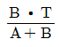
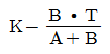
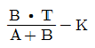
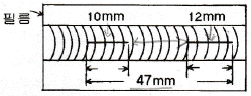
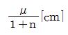
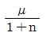

방사선비파괴검사산업기사 (2017-09-23 기출문제)
1과목: 비파괴검사 개론
1. 초음파탐상시험에서 공진법으로 시험체의 두께를 측정할 때 2MHz 의 주파수에서 기본공명이 발생했다면 이 시험체의 두께는 몇 mm인가? (단, 시험체내의 초음파 속도는 4800m/s 이다.)
- 1.2
- 2.4
- 3.6
- 4.8
(정답률: 70%)

2. 다음 중 비파괴검사법으로 가장 측정하기 어려운 것은?
- 시험체의 형태
- 시험체의 항복점
- 시험체내의 불연속
- 시험체의 자기적 성질
(정답률: 75%)
3. 비파괴시험의 적용 예에 대하여 설명한 것으로 옳은 것은?
- 도금막 두께 및 판 두께 측정에는 전자유도 시험이 주로 이용된다.
- 공항 등에서 수하물의 내용물을 조사하는데는 초음파탐상시험이 주로 이용된다.
- 구조상 분해할 수 없는 전기용품의 배선상황을 조사하는 데는 침투탐상시험이 주로 이용된다.
- 구조부 재질의 적합 여부 또는 규정된 막처리가 잘되어 있는가의 여부를 점검하기 위해서는 외관검사가 주로 이용된다.
(정답률: 74%)
4. 다음 중 Co-60 감마선조사장치로 비파괴검사 시 적용이 어려운 것은?
- 50mm 강 주조품
- 40mm 구리판 용접부
- 40mm 청동 주조품
- 40mm 플라스틱 배관 이음부
(정답률: 75%)
5. 자분탐상시험의 결함 검출에 대한 설명으로 틀린 것은?
- 비자성체의 결함은 검출이 곤란하다.
- 교류를 사용하면 주로 강자성체의 표면결함 검출에 국한된다.
- 표면직하 결함의 탐상에는 직류 건식자분을 사용하면 검출능이 향상된다.
- 오스테나이트계 재질의 표면결함은 반드시 교류 형광 자분을 사용해야 한다.
(정답률: 54%)
6. 어느 방향으로 소성변형을 가한 재료에 역방향의 하중을 가할 경우 소성변형에 대한 저항이 감소하는 효과는?
- 슬림(Slip) 효과
- 제벡(Seebeck) 효과
- 콭렐(Cottrell) 효과
- 바우싱거(Bauschinger) 효과
(정답률: 85%)
7. 다공질재료에 윤활유를 흡수시켜 계속해서 급유 하지 않도록 제조된 합금으로 대부분 분말 야금법으로 제조되는 합금은?
- 두라나 베어링
- 오일리스 베어링
- 주석계 화이트 메탈
- 아연계 화이트 메탈
(정답률: 93%)
8. 방진합금을 방진기구별로 분류한 것 중 이에 해당되지 않는 것은?
- 슬립형 합금
- 쌍정형 합금
- 강자성형 합금
- 전위형 합금
(정답률: 60%)
9. 리드 프레임(lead frame) 재료로 요구되는 성능을 설명한 것 중 틀린 것은?
- 고집적화에 따라 열방산이 좋아야 한다.
- 보다 작고 엷게 하기 위하여 강도가 커야 한다.
- 본딩(bonding)을 위한 우수한 도금성을 가져야 한다.
- 재료의 치수정밀도가 높고 잔류응력이 커야한다.
(정답률: 65%)
10. 알루미늄 특성에 대한 설명으로 옳은 것은?
- 알루미늄은 표면에 생기는 산화 피막으로 내식성이 나쁘다.
- 산성 용액 중에서는 수소이온농도의 증가에 따라 부식이 증가하지 않는다.
- 대기 중에서 내식성이 좋으나 부식률은 대기중의 습도, 염분 및 불순물 함유량에 따라 항상 같다.
- 탄산염, 크롬산염, 초산염 등의 중성 수용액에서는 내식성이 좋으나 염화물 용액 중에서는 나빠진다.
(정답률: 77%)
11. 다음 재료 중에서 고로(용광로)에서 제조되는 것은?
- 선철
- 순구리
- 공석강
- 특수강
(정답률: 72%)
12. 다음 중 용융점이 가장 높은 금속은?
- Mo
- Fe
- Cu
- Al
(정답률: 72%)
13. 고망간(Mn)강에 대한 설명으로 틀린 것은?
- 열전도성이 나쁘다.
- 가공경화성이 매우 크다.
- 팽창계수가 작아 열변형을 일으키지 않는다.
- 해드필드강이라 하며, 오스테나이트 조직이다.
(정답률: 55%)
14. 탄소강에서 황에 의하여 일어나는 적열취성을 방지하는데 가장 효과적인 원소는?
- W
- Co
- Si
- Mn
(정답률: 91%)
15. 철(Fe)과 탄소(C)가 약 2.0% 이상이며, 압축강도가 가장 큰 재료는?
- 청동
- Y합금
- 주철
- 두랄루민
(정답률: 58%)
16. 아크 용접 시 발생하는 용접 결함 중 용입불량의 원인으로 가장 거리가 먼 것은?
- 모재의 루트 간격이 너무 클 때
- 용접 홈의 각도가 너무 작을 때
- 사용하는 용접전류가 너무 낮을 때
- 용접봉의 운봉속도가 너무 빠를 때
(정답률: 55%)
17. 용접 후 피닝을 하는 주목적은 무엇인가?
- 도료를 없애기 위해서
- 모재의 균열을 검사하기 위해서
- 용접 후 잔류 응력을 제거하기 위해서
- 응력을 강하게 하고 변형을 적게 하기 위해서
(정답률: 84%)
18. 아크 전류가 200A이고, 아크 전압이 30V, 무부하 전압이 60V일 때, 이 교류 용접기의 역률은 얼마인가? (단, 내부 손실은 없다.)
- 30%
- 40%
- 50%
- 60%
(정답률: 50%)
19. 다음 용접부의 시험 중 화학적 시험인 것은?
- 피로 시험
- 굽힘 시험
- 충격 시험
- 부식 시험
(정답률: 92%)
20. 다음 용접방법 중 전기 저항열을 이용한 용접방법이 아닌 것은?
- 심 용접
- 테르밋 용접
- 퍼커션 용접
- 프로젝션 용접
(정답률: 56%)
2과목: 방사선투과검사 원리 및 규격
21. 방사선 투과사진의 선명도에 영향을 미치는 인자가 아닌 것은?
- 고류불선명도
- 기하학적불선명도
- 산란방사선
- 시험체 두께차이
(정답률: 37%)
22. 방사선 작업종사자에 대한 연간 허용피폭 선량한도는?
- 50mSv
- 40mSv
- 30mSv
- 20mSv
(정답률: 100%)
23. 다음 중 투과사진에서 결함 또는 투과도계의 존재를 확인할 수 있는지의 여부를 결정하는 것은?
- 식별한계 콘트라스트
- 필름 콘트라스트
- 투과사진 콘트라스트
- 피사체 콘트라스트
(정답률: 88%)
24. X선과 물질의 상호작용 중 X선 에너지가 물질내에 흡수되지 않는 것은?
- 광전효과
- 콤프턴효과
- 톰슨효과
- 전자쌍생성
(정답률: 70%)
25. 방사선투과시험 시 결함의 깊이를 파라렉스법으로 측정할 때 필름면에서 결함까지 거리를 D, 선원의 이동거리를 A, 선원-필름간 거리를 T, 시편 저면으로부터 필름면까지의 거리를 K라 할 때, 시편 저면에서 결함까지의 깊이 H를 구하는 식은? (단, 다음 식에서 B는 결함상의 이동거리 이다.)

- K - D


(정답률: 82%)
26. 방사선투과사진에서 필름의 농도를 구하는 공식으로 맞는 것은? (단, D : 농도, LO : 입사광량, L : 투과광량)
- D = log10(Lo/L)
- D = log10(L/Lo)
- D = In10(Lo/L)
- D = In10(L/Lo)
(정답률: 62%)
27. 다음 중 가속전자가 X선 튜브 내의 표적에 부딪쳐 에너지 변환을 일으킬 때 가장 많이 생성되는 것은?
- 열
- 1차 X선
- 1차 γ선
- 2차 X선
(정답률: 86%)
28. X선관과 시험체 사이에 설치한 필터가 언더컷(undercut)을 일으키는 산란 방사선을 줄이는 과정은?
- 일차 빔의 짧은 파장의 성분을 흡수하므로써
- 일차 빔의 긴 파장의 성분을 흡수하므로써
- 후방산란 방사선을 흡수하므로써
- 빔의 강도를 줄임으로써
(정답률: 알수없음)
29. 방사선투과시험에 사용하는 γ선원의 밀봉캡슐에 대한 구비조건과 거리가 먼 것은?
- 부식되지 않아야 한다.
- 방사선의 흡수가 커야 한다.
- 충분한 기계적 강도를 가져야 한다.
- 밀봉을 확실히 하여 누출오염이 없어야 한다.
(정답률: 93%)
30. X선 발생장치로 120kV를 작동시킬 때 X선 최소 파장[Å]은 약 얼마인가?
- 0.1
- 0.5
- 1.0
- 1.5
(정답률: 70%)
31. Co-60 30Ci가 들어 있는 콘테이너의 표면에서의 허용선량은?
- 시간당 2밀리시버트
- 시간당 0.3밀리시버트
- 시간당 1밀리시버트
- 시간당 0.1밀리시버트
(정답률: 65%)
32. 1.5MeV γ선에 대한 콘크리트의 질량감쇠계수는 0.⑤19cm2/g이고 밀도는 2.35g/cm3이다. 이의 1/10가층은 얼마인가?
- 5.7cm
- 8.8cm
- 12.4cm
- 18.8cm
(정답률: 47%)
33. 스테인레스강 용접부의 방사선투과시험 방법 및 투과사진의 등급분류 방법(KS D 0237)에 따라 모재의 호칭두계가 12mm이고, 양면 살돋움이 있는 스테인레스강 용접부를 촬영하였을 때 시험부에서 인정된 투과도계의 선지름이 0.16mm라면 투과도계의 식별도는?
- 1.33%
- 1.14%
- 1.0%
- 0.8%
(정답률: 57%)
34. 강 용접 이음부의 방사선투과 시험방법(KS B 0845)에 따라 투과사진에 [그림]과 같이 용입불량이 나타났을 때 등급분류를 한다면 산정된 결함의 총길이는 얼마인가?

- 12mm
- 22mm
- 24mm
- 47mm
(정답률: 77%)
35. 방사성동위원소등을 이동사용 하는 작업에 대한 설명으로 옳지 않은 것은?
- 방사선작업은 사용시설 또는 방사선관리구역 안에서 수행할 것
- 방사선작업 시에는 개인피폭선량계를 착용할 것
- 방사선작업은 반드시 3인 이상을 1조로 편성하여 작업할 것
- 감마선조사장치를 사용하는 경우에는 콜리메터를 장착하고 사용할 것
(정답률: 87%)
36. Ir-192의 반감기는 75일이며, 이것이 체내에 흡수되었을 때 생물학적 반감기가 50일 이라면 유효 반감기는?
- 25일
- 30일
- 125일
- 625일
(정답률: 60%)
37. 보일러 및 압력용기에 대한 방사선투과검사(ASME Sec.V Art.2)에 따라 촬영할 때 선원 필름간 거리가 500mm, 시험체 두께가 40mm, 선원의 크기가 3mm일 때 기하학적 불선명도 값은?
- 0.2mm
- 0.26mm
- 0.28mm
- 0.30mm
(정답률: 63%)
38. 방사선량 단위 사용의 연결이 틀린 것은?
- 조사선량 - 엑스선, 감마선의 측정 - 뢴트겐(R)
- 흡수선량 - 전자선, 베타선의 측정 - 그레이(Gy)
- 등가선량 - 엑스선, 감마선의 측정 - 라드(rad)
- 유효선량 - 전자선, 베타선의 측정 - 시버트(Sv)
(정답률: 80%)
39. 강 용접 이음부의 방사선투과 시험 방법(KS B 0845)에서 검출된 결함이 제3종의 결함인 경우의 분류는?
- 1류
- 2류
- 3류
- 4류
(정답률: 77%)
40. 보일러 및 압력용기에 대한 방사선투과검사(ASME Sec.V Art.2)에 따라 배관의 원주방향 용접부를 이중벽단면 촬영법으로 촬영하고자 할 때 전용접부를 검사하고자 한다면 최소한 몇 회의 촬영이 요구되는가?
- 2회
- 3회
- 4회
- 6회
(정답률: 73%)
3과목: 방사선투과검사 시험
41. 방사선투과검사에서 계조계를 사용하는 가장 큰 목적은?
- 투과도계에 비해 구입하기가 용이하다.
- 투과도계에 비해 사용하기가 편리하다.
- 투과도계에 비해 객관적인 평가가 가능하다.
- 투과도계에 비해 시험체의 두께 범위가 넓다.
(정답률: 62%)
42. 긁힌 자국이 있는 연박증감지를 사용하여 촬영한 투과사진 상에 나타날 예상되는 인공결함의 형태는?
- 검고 가는선으로 나타난다.
- 희고 굵은 줄무늬로 나타난다.
- 검거나 흰 줄무늬로 나타난다.
- 별다른 현상이 나타나지 않는다.
(정답률: 75%)
43. 방사선 투과검사에서

의 값이 각각 0.12, 0.19, 0.22 및 0.76이었다. 이때 투과사진의 콘트라스트가 가장 큰
값은? (단, μ : 선형흡수계수, n : 산란비 이다.)- 0.12
- 0.19
- 0.22
- 0.76
(정답률: 47%)
44. 주조품의 결함으로 용융금속이 응고 시 두께차가 큰 부분에서 발생하여 수축정도의 차이에서 발생하는 찢어짐을 무엇이라고 하는가?
- 콜드셧(Cold shut)
- 핫티어(Hot tear)
- 수축관(Shrinkage)
- 스캐브(Scab)
(정답률: 36%)
45. X선 발생장치의 사용 시 에이징(aging)에 대한 설명으로 옳은 것은?
- X선 발생장치의 사용 전 및 후에 실시한다.
- X선 발생장치의 사용 중에는 실시할 필요가 없다.
- 촬영시간이 오래 걸리는 경우에 실시한다.
- 에이징은 사용하면서 자동적으로 실시된다.
(정답률: 71%)
46. X선관의 냉각장치가 작동되지 않는 상태로 X선 발생장치를 사용할 경우 다음 중 가장 큰 손상을 받는 곳은?
- 표적판(target)
- 필라멘트(filament)
- 양극판(anode plate)
- 유리관(tube envelope)
(정답률: 80%)
47. 입자 방사선 및 광자는 어떤 과정을 걸칠 때 에너지를 잃게 되는가?
- 방사능이 붕괴될 때
- 물질을 이온화시킬 때
- 원자가 흡수될 때
- 열이온이 방출될 때
(정답률: 70%)
48. 화합물의 종류를 알아낸다든가, 결정구조를 확인한다든지 또는 냉간가공 및 어닐링이 금속에 미치는 영향을 알고자 하는 등의 분야에 적용되는 특수 방사선 투과검사법은?
- 제로래디오그래피(Xeroradiography)
- X선 회절법(X-ray diffraction method)
- 미시 방사선 투과검사(Micro-radiography)
- 전자 방사선 투과검사(Electron radiohraphy)
(정답률: 73%)
49. 다음 용접균열 중 용접금속부가 아닌 모재 부위에 발생하는 균열의 종류는?
- 종균열(Longitudinal crack)
- 횡균열(Transverse crack)
- 라멜라 티어(Lamella tear)
- 마이크로 피셔(Micro fissure)
(정답률: 85%)
50. 용접부의 방사선투과 사진에서 매우 좁고 직선의 검은선으로 용접부의 한쪽면에 평행하게 나타난 결함은?
- 융합불량
- 용입불량
- 슬래그 혼입
- 균열
(정답률: 알수없음)
51. X선의 발생효율 측면에서 볼 때, 다음 중 X선관의 표적재질로 사용하기에 가장 부적절한 것은?
- 금
- 백금
- 텅스텐
- 몰리브덴
(정답률: 69%)
52. Ir-192 선원으로 어떤 시험체를 1분 동안 노출을 주었을 때 농도 2.0의 사진을 얻는다면 90일 후에는 노출시간을 얼마로 하여야 동일 농도의 사진을 얻을 수 있는가?
- 약2.3분
- 약3.4분
- 약4.6분
- 약5.2분
(정답률: 60%)
53. 다음 중 필름콘트라스트에 영향을 미치는 인자와 가장 관계가 먼 것은?
- 현상조건
- 필름의 종류
- 산란방사선
- 현상액의 강도
(정답률: 39%)
54. 8mA-min으로 촬영한 방사선 투과사진에서 농도 0.8을 얻었다. 농도 2.0의 사진을 얻으려고 한다. 필름의 특성곡선 상에서 농도 0.8과 2.0사이의 log E 차이가 0.76 이라면 농도 2.0의 사진을 얻기 위한 노출량(mA-min)은?
- 46.4
- 32.2
- 18.4
- 16.0
(정답률: 45%)
55. 방사선 발생장치에서 전류 3mA로 5분의 노출을 주어 양질의 사진을 얻었을 때, 5mA를 사용하면 노출시간은 얼마를 주어야 되는가? (단, 전압 변동은 없다.)
- 3분
- 6분
- 9분
- 12분
(정답률: 75%)
56. 시료 중에 들어있는 방사성 핵종의 분포를 그곳에서 나오는 방사선의 감광작용을 이용하여 시료에 밀착시킨 사진유제막에 기록하는 특수방사선투과시험법은?
- 제로 래디오그라프
- 실시간 래디오그라프
- 오토 래디오그라프
- 중성자 래디오그라프
(정답률: 알수없음)
57. 너무 온도가 높거나 오염된 정착액에 의해 필름의 기저부분으로부터 감광유제가 들뜨는 현상은?
- 반점(spotting)
- 주름(frilling)
- 망상형주름(reticulation)
- 줄무늬(chemical streak)
(정답률: 알수없음)
58. Ir-192 선원으로 20mm의 강판을 방사선투과검사 시 방사선안전관리에 관한 사항으로 부적절한 것은?
- 방사선이 인체 및 장치에 피해가 없도록 차폐조치를 한다.
- 방사선원으로부터 거리를 멀게 하여 인체의 방사선 피폭량을 줄인다.
- 신속, 정확하게 작업을 수행하여 방사선 피폭량을 최소화한다.
- 필름뱃지와 같은 안전장구를 착용하면 방사선 차폐효과가 있으므로 선원에 근접 가능하다.
(정답률: 78%)
59. 강 시험체의 γ선 투과검사 시 필름에 산란선 작용을 억제하기 위하여 주위에 배치시키는 masking 물질로 적합하지 않은 것은?
- Barium Clay
- Metallic Shot
- Lead Plate
- Carbon Powder
(정답률: 72%)
60. 직경이 2m인 압력용기의 전 원주 용접부에 대해 1회 노출로 방사선 투과검사를 하려고 한다. 다음 중 투고도계의 위치와 마커(납숫자)의 위치로 적합한 것은? (단, 선원은 압력용기 내부에 위치한다.)
- 투과도계, 마커 모두 압력용기 외부에 부착한다.
- 투과도계, 마커 모두 압력용기 내, 외부 2군데에 부착한다.
- 투과도계는 압력용기 내부에, 마커는 압력용기 외부에 부착한다.
- 투과도계는 압력용기 외부에, 마커는 압력용기 내부에 부착한다.
(정답률: 84%)
f = (2n-1) * v / (4t)
여기서 n은 공명의 순서, v는 초음파의 속도, t는 시험체의 두께이다.
문제에서 n=1, v=4800m/s, f=2MHz로 주어졌으므로, 위 식을 t에 대해 풀면 다음과 같다.
t = (2n-1) * v / (4f) = (2*1-1) * 4800 / (4*2*10^6) = 0.0012m = 1.2mm
따라서, 이 시험체의 두께는 1.2mm이다.